<style>
    .center {
        display: block;
        margin-left: auto;
        margin-right: auto;
        width: 50%;
      }

    a {
      text-decoration: none;
      display: inline-block;
      padding: 8px 16px;
    }
    
    a:hover {
      background-color: #ddd;
      color: black;
    }
    
    .previous {
      background-color: #f1f1f1;
      color: black;
    }
    
    .next {
      background-color: #160042;
      color: white;
    }
    </style>

<section class="support section bg-gray">
	<div class="container">
    <div class="container" style="text-align:justify; margin-bottom:50px;">
      <h4 class="join">Standard Tools</h4>
      <p>Utilities for fixing EC firmware size, extracting EC firmware from System Bios, extracting windows 10 keys, and EFI password decryption/reset for macbooks, Chromebook unlock, and listing compatible SPI Chips for laptops you repair.</p>
      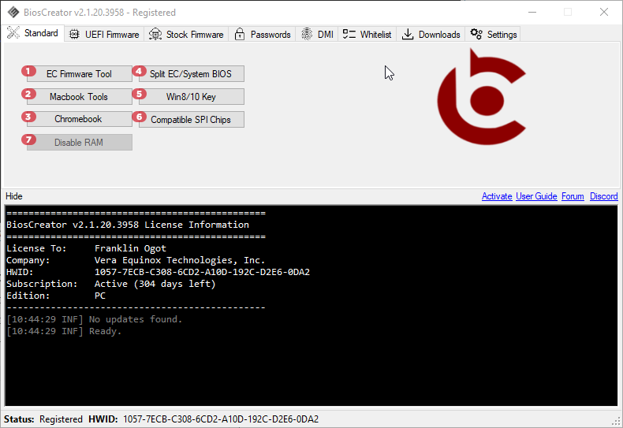
      <br>
      <h2>1. EC Firmware Tool</h2>
      <p>This tool is a collection of utility for resizing EC firmware and extracting EC firmware from System Bios normally found in laptop motherboards that uses programmable ENE and ITE chips.</p>
      
      <br>
      <h2>2. Macbook Tools</h2>
      <p>Macbook tools is for unlocking EFI for macbooks 2012 - 2017 and decrypting EFI password for macbook 2011 or earlier. You can also change serial number, get firmware information and EMC info.</p>
      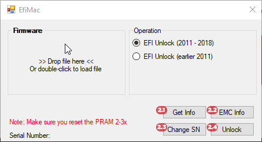
      <br>
      <h2>2.1 Get Info</h2>
      <p>Right after clicking the get info button, a message filled with information about the firmware will appear on the dialog box.</p>
      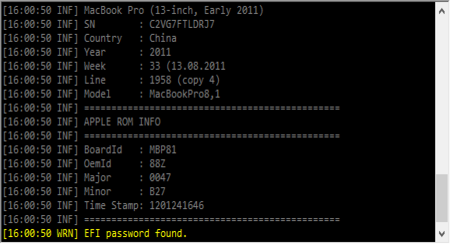
      <br>
      <h2>2.2 EMC Info</h2>
      <p>After dragging the firmware and hitting the emc info a message filled with information about the firmware will appear on the dialog box.</p>
      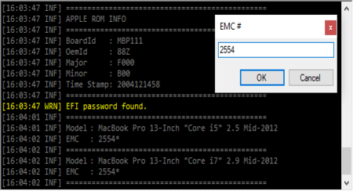
      <br>
      <h2>2.3 Change SN</h2>
      <p>An inputbox will pop-up right after clicking the change sn button, when the process is done the file can be located in it's designated folder.</p>
      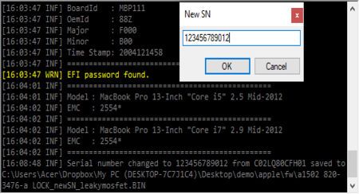
      <br>
      <h2>2.4. Unlock</h2>
      <p>EFI unlock is used to bypass the password of a Mac's firmware, after the bypass is done the generated file will appear on it's designated folder.</p>
      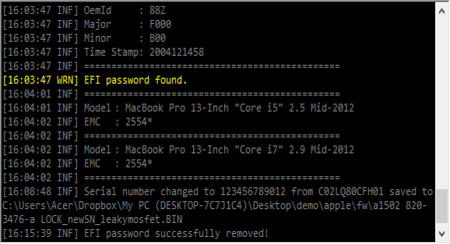
      <br>
      <h2>3. Chromebook</h2>
      <p>The incoming updates v2.1.4 will support unlocking of Chromebooks (e.g., enabling of developer mode and disabling enrollment checks).</p>
      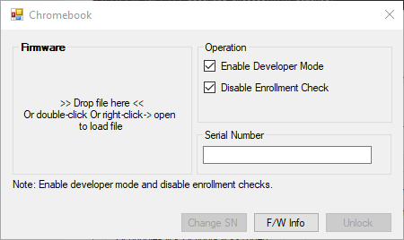
      <br>
      <h2>4. Split EC/System BIOS</h2>
      <p>Primarily used for splitting extracted stock firmware to separate EC firmware and System Bios. Commonly used in HP motherboards. For more information, kindly click this link.</p>
      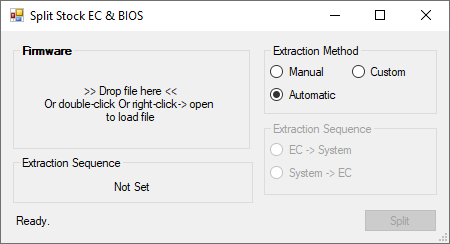
      <br>
      <h2>5. Windows 10 Key</h2>
      <p>Tool for extracting and changing Windows 10 license key from System Bios firmware dump.</p>
      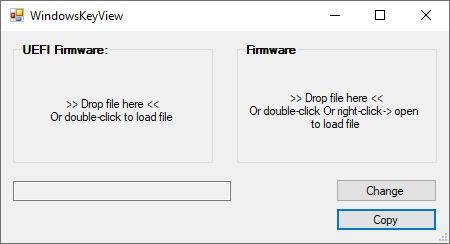
      <br>
      <h2>6. Compatible SPI Chips</h2>
      <p>Tool for determining the compatible spi chip for intel firmwares. To know more about the feature, just see the full guide here.</p>
      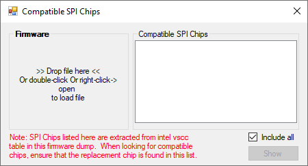
      <br>
      <h2>7. Disable RAM</h2>
      <p>To know more about the feature, just see the full guide here.</p>
      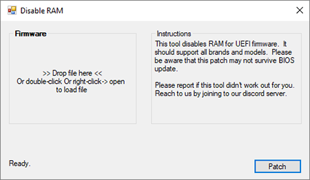

    <a href="{{ site.baseurl }}/bios-creator/uefi-firmware-tools" class="next">Next &raquo;</a>

		</div> <!-- End row -->
	</div> <!-- End container -->
</section> <!-- End section -->